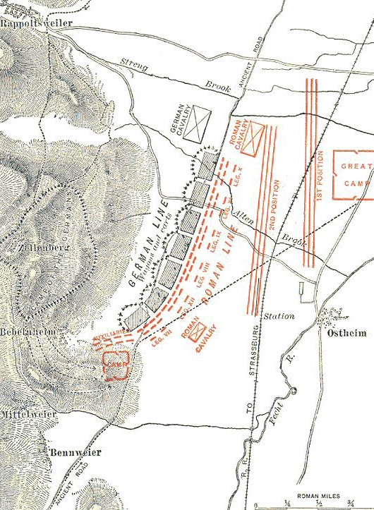

[24] 1 At barbari, consilio Romanorum cognito praemisso equitatu et essedariis, quo plerumque genere in proeliis uti consuerunt, reliquis copiis subsecuti nostros navibus egredi prohibebant. 2 Erat ob has causas summa difficultas, quod naves propter magnitudinem nisi in alto constitui non poterant, militibus autem, ignotis locis, impeditis manibus, magno et gravi onere armorum oppressis simul et de navibus desiliendum et in fluctibus consistendum et cum hostibus erat pugnandum, 3 cum illi aut ex arido aut paulum in aquam progressi omnibus membris expeditis, notissimis locis, audacter tela coicerent et equos insuefactos incitarent. 4 Quibus rebus nostri perterriti atque huius omnino generis pugnae imperiti, non eadem alacritate ac studio quo in pedestribus uti proeliis consuerant utebantur.
[25] 1 Quod ubi Caesar animadvertit, naves longas, quarum et species erat barbaris inusitatior et motus ad usum expeditior, paulum removeri ab onerariis navibus et remis incitari et ad latus apertum hostium constitui atque inde fundis, sagittis, tormentis hostes propelli ac submoveri iussit; quae res magno usui nostris fuit. 2 Nam et navium figura et remorum motu et inusitato genere tormentorum permoti barbari constiterunt ac paulum modo pedem rettulerunt. 3 Atque nostris militibus cunctantibus, maxime propter altitudinem maris, qui X legionis aquilam gerebat, obtestatus deos, ut ea res legioni feliciter eveniret, 'desilite', inquit, 'milites, nisi vultis aquilam hostibus prodere; ego certe meum rei publicae atque imperatori officium praestitero.' 4 Hoc cum voce magna dixisset, se ex navi proiecit atque in hostes aquilam ferre coepit. 5 Tum nostri cohortati inter se, ne tantum dedecus admitteretur, universi ex navi desiluerunt. 6 Hos item ex proximis primi navibus cum conspexissent, subsecuti hostibus adpropinquaverunt.
[26] 1 Pugnatum est ab utrisque acriter. Nostri tamen, quod neque ordines servare neque firmiter insistere neque signa subsequi poterant atque alius alia ex navi quibuscumque signis occurrerat se adgregabat, magnopere perturbabantur; 2 hostes vero, notis omnibus vadii, ubi ex litore aliquos singulares ex navi egredientes conspexerant, incitatis equis impeditos adoriebantur, 3 plures paucos circumsistebant, alii ab latere aperto in universos tela coiciebant. 4 Quod cum animadvertisset Caesar, scaphas longarum navium, item speculatoria navigia militibus compleri iussit, et quos laborantes conspexerat, his subsidia submittebat. 5 Nostri, simul in arido constiterunt, suis omnibus consecutis, in hostes impetum fecerunt atque eos in fugam dederunt; neque longius prosequi potuerunt, quod equites cursum tenere atque insulam capere non potuerant. Hoc unum ad pristinam fortunam Caesari defuit.
[27] 1 Hostes proelio superati, simul atque se ex fuga receperunt, statim ad Caesarem legatos de pace miserunt; obsides sese daturos quaeque imperasset facturos polliciti sunt. 2 Una cum his legatis Commius Atrebas venit, quem supra demonstraveram a Caesare in Britanniam praemissum. 3 Hunc illi e navi egressum, cum ad eos oratoris modo Caesaris mandata deferret, comprehenderant atque in vincula coniecerant; 4 tum proelio facto remiserunt et in petenda pace eius rei culpam in multitudinem contulerunt et propter imprudentiam ut ignosceretur petiverunt. 5 Caesar questus quod, cum ultro in continentem legatis missis pacem ab se petissent, bellum sine causa intulissent, ignoscere se imprudentiae dixit obsidesque imperavit; 6 quorum illi partem statim dederunt, partem ex longinquioribus locis arcessitam paucis diebus sese daturos dixerunt. 7 Interea suos in agros remigrare iusserunt, principesque undique convenire et se civitatesque suas Caesari commendare coeperunt.
[28] 1 His rebus pace confirmata, post diem quartum quam est in Britanniam ventum naves XVIII, de quibus supra demonstratum est, quae equites sustulerant, ex superiore portu leni vento solverunt. 2 Quae cum adpropinquarent Britanniae et ex castris viderentur, tanta tempestas subito coorta est ut nulla earum cursum tenere posset, sed aliae eodem unde erant profectae referrentur, aliae ad inferiorem partem insulae, quae est propius solis occasum, magno suo cum periculo deicerentur; 3 quae tamen ancoris iactis cum fluctibus complerentur, necessario adversa nocte in altum provectae continentem petierunt.
[29] 1 Eadem nocte accidit ut esset luna plena, qui dies a maritimos aestus maximos in Oceano efficere consuevit, nostrisque id erat incognitum. 2 Ita uno tempore et longas naves, [quibus Caesar exercitum transportandum curaverat,] quas Caesar in aridum subduxerat, aestus complebat, et onerarias, quae ad ancoras erant deligatae, tempestas adflictabat, neque ulla nostris facultas aut administrandi aut auxiliandi dabatur. 3 Compluribus navibus fractis, reliquae cum essent funibus, ancoris reliquisque armamentis amissis ad navigandum inutiles, magna, id quod necesse erat accidere, totius exercitus perturbatio facta est. 4 Neque enim naves erant aliae quibus reportari possent, et omnia deerant quae ad reficiendas naves erant usui, et, quod omnibus constabat hiemari in Gallia oportere, frumentum in his locis in hiemem provisum non erat.
[30] 1 Quibus rebus cognitis, principes Britanniae, qui post proelium ad Caesarem convenerant, inter se conlocuti, cum et equites et naves et frumentum Romanis deesse intellegerent et paucitatem militum ex castrorum exiguitate cognoscerent, quae hoc erant etiam angustior quod sine impedimentis Caesar legiones transportaverat, 2 optimum factu esse duxerunt rebellione facta frumento commeatuque nostros prohibere et rem in hiemem producere, quod his superatis aut reditu interclusis neminem postea belli inferendi causa in Britanniam transiturum confidebant. 3 Itaque rursus coniuratione facta paulatim ex castris discedere et suos clam ex agris deducere coeperunt.
[31] 1 At Caesar, etsi nondum eorum consilia cognoverat, tamen et ex eventu navium suarum et ex eo quod obsides dare intermiserant fore id quod accidit suspicabatur. 2 Itaque ad omnes casus subsidia comparabat. Nam et frumentum ex agris cotidie in castra conferebat et, quae gravissime adflictae erant naves, earum materia atque aere ad reliquas reficiendas utebatur et quae ad eas res erant usui ex continenti comportari iubebat. 3 Itaque, cum summo studio a militibus administraretur, XII navibus amissis, reliquis ut navigari satis commode posset effecit.
[32] 1 Dum ea geruntur, legione ex consuetudine una frumentatum missa, quae appellabatur VII, neque ulla ad id tempus belli suspicione interposita, cum pars hominum in agris remaneret, pars etiam in castra ventitaret, ii qui pro portis castrorum in statione erant Caesari nuntiaverunt pulverem maiorem quam consuetudo ferret in ea parte videri quam in partem legio iter fecisset. 2 Caesar id quod erat suspicatus aliquid novi a barbaris initum consilii, cohortes quae in statione erant secum in eam partem proficisci, ex reliquis duas in stationem succedere, reliquas armari et confestim sese subsequi iussit. 3 Cum paulo longius a castris processisset, suos ab hostibus premi atque aegre sustinere et conferta legione ex omnibus partibus tela coici animadvertit. 4 Nam quod omni ex reliquis partibus demesso frumento pars una erat reliqua, suspicati hostes huc nostros esse venturos noctu in silvis delituerant; 5 tum dispersos depositis armis in metendo occupatos subito adorti paucis interfectis reliquos incertis ordinibus perturbaverant, simul equitatu atque essedis circumdederant.
[33] 1 Genus hoc est ex essedis pugnae. Primo per omnes partes perequitant et tela coiciunt atque ipso terrore equorum et strepitu rotarum ordines plerumque perturbant, et cum se inter equitum turmas insinuaverunt, ex essedis desiliunt et pedibus proeliantur. 2 Aurigae interim paulatim ex proelio excedunt atque ita currus conlocant ut, si illi a multitudine hostium premantur, expeditum ad quos receptum habeant. 3 Ita mobilitatem equitum, stabilitatem peditum in proeliis praestant, ac tantum usu cotidiano et exercitatione efficiunt uti in declivi ac praecipiti loco incitatos equos sustinere et brevi moderari ac flectere et per temonem percurrere et in iugo insistere et se inde in currus citissime recipere consuerint.
[34] 1 Quibus rebus perturbatis nostris [novitate pugnae] tempore oportunissimo Caesar auxilium tulit: namque eius adventu hostes constiterunt, nostri se ex timore receperunt. 2 Quo facto, ad lacessendum hostem et committendum proelium alienum esse tempus arbitratus suo se loco continuit et brevi tempore intermisso in castra legiones reduxit. 3 Dum haec geruntur, nostris omnibus occupatis qui erant in agris reliqui discesserunt. 4 Secutae sunt continuos complures dies tempestates, quae et nostros in castris continerent et hostem a pugna prohiberent. 5 Interim barbari nuntios in omnes partes dimiserunt paucitatemque nostrorum militum suis praedicaverunt et quanta praedae faciendae atque in perpetuum sui liberandi facultas daretur, si Romanos castris expulissent, demonstraverunt. His rebus celeriter magna multitudine peditatus equitatusque coacta ad castra venerunt.
[35] 1 Caesar, etsi idem quod superioribus diebus acciderat fore videbat, ut, si essent hostes pulsi, celeritate periculum effugerent, tamen nactus equites circiter XXX, quos Commius Atrebas, de quo ante dictum est, secum transportaverat, legiones in acie pro castris constituit. 2 Commisso proelio diutius nostrorum militum impetum hostes ferre non potuerunt ac terga verterunt. 3 Quos tanto spatio secuti quantum cursu et viribus efficere potuerunt, complures ex iis occiderunt, deinde omnibus longe lateque aedificiis incensis se in castra receperunt.
[36] 1 Eodem die legati ab hostibus missi ad Caesarem de pace venerunt.